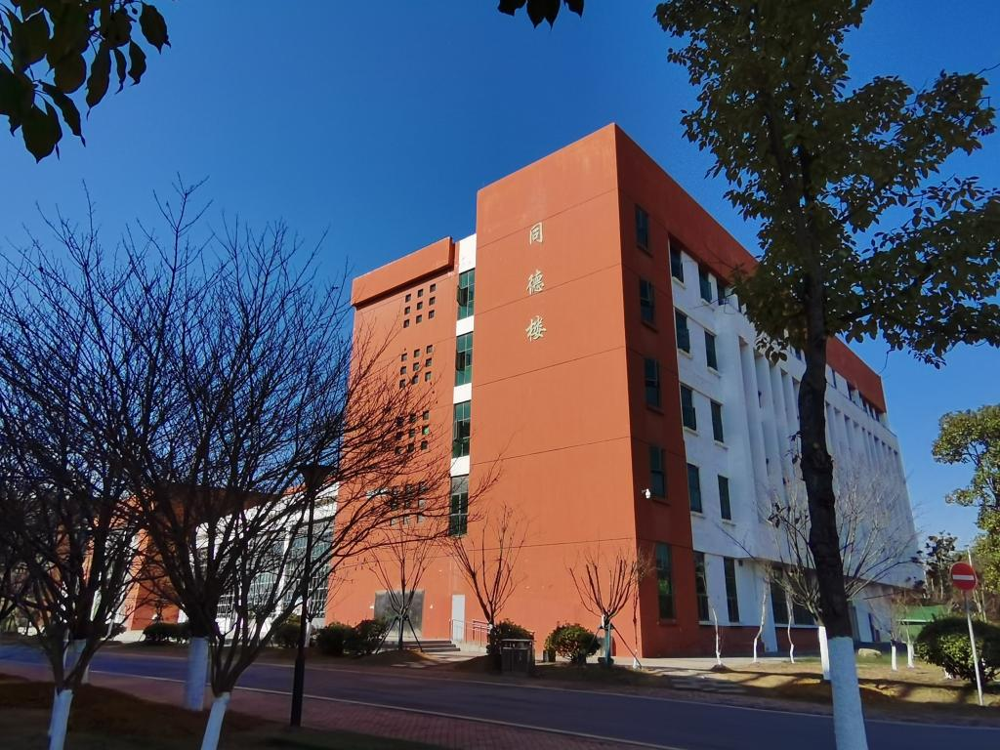
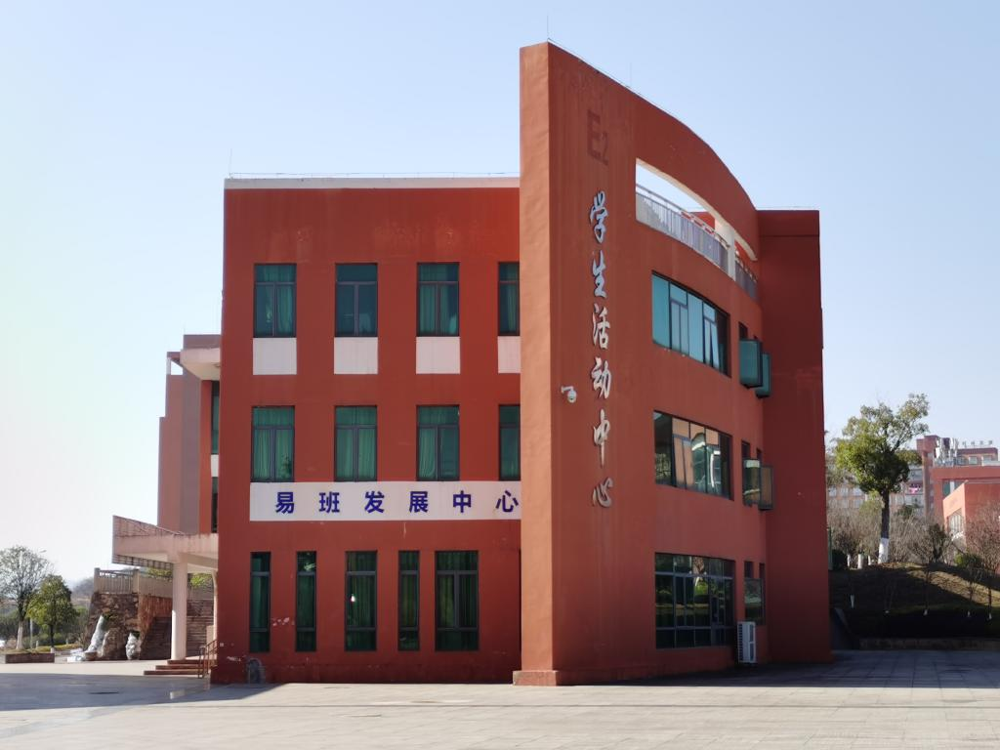
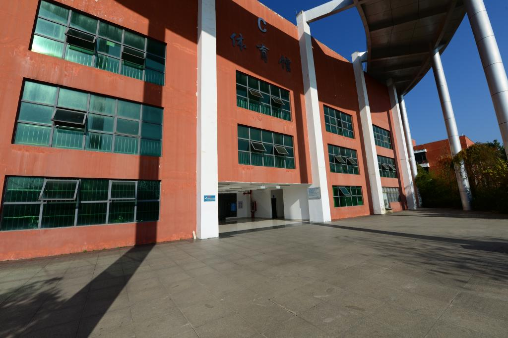
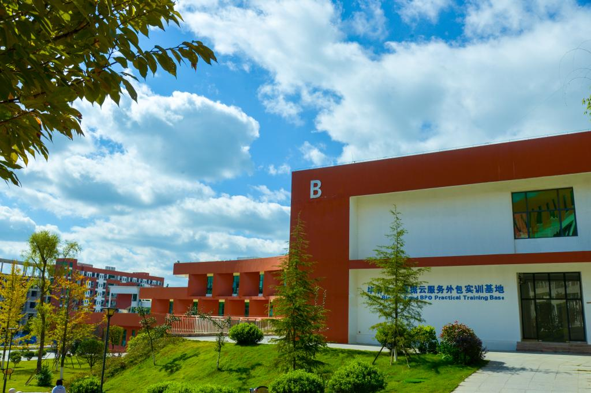

毕节职业技术学院简介
毕节职业技术学院电子信息工程系于2008年组建以来，经过几年的建设发展，已发展成为我院师资力量雄厚，教学设施齐备，教学质量过硬，特色明显的系之一。
电子信息工程系坚持以就业为导向，以企业需求为依据，以综合职业素质培养为基础，以职业技能培养为本位，以应用为目的，大力推进全新的人才培养模式，打造特色专业，着力培养社会需求的技能型人才。
建系以来为社会培养输送了高、中级技能型人才数千名，经过多年努力我系建设成为了国家级计算机应用技术高技能人才培养基地、华为ICT学院、H3C网络学院。
一、系部简介
系部现有专兼职教师37人，其中有副教授以上12人，讲师15人，硕士研究生16人。
现有学生机房19个，共1200余台计算机，多媒体教室11个，计算机网络综合布线、计算机网络、软件开发、图形图像设计实训室、室内装饰设计实训室、智能应用实训室、网络云计算实训室、网络安全实训室、电子综合等专业实训室十余个。
二、校园掠影
-

同德楼 -

学生活动中心 -

学校室内体育馆 -

实习基地
三、教学成果
电子信息工程系始终坚持“以职业为根本，以质量求生存，以特色树品牌，以创新促发展”的办学理念，近年来系部师生在各级职业技能大赛和教学能力比赛中取得优异的成绩，其中获国家级三等奖1项，省级一等奖5项，省级二等奖16项，省级三等奖20余项。
图片来源：学院官网 · 校园掠影